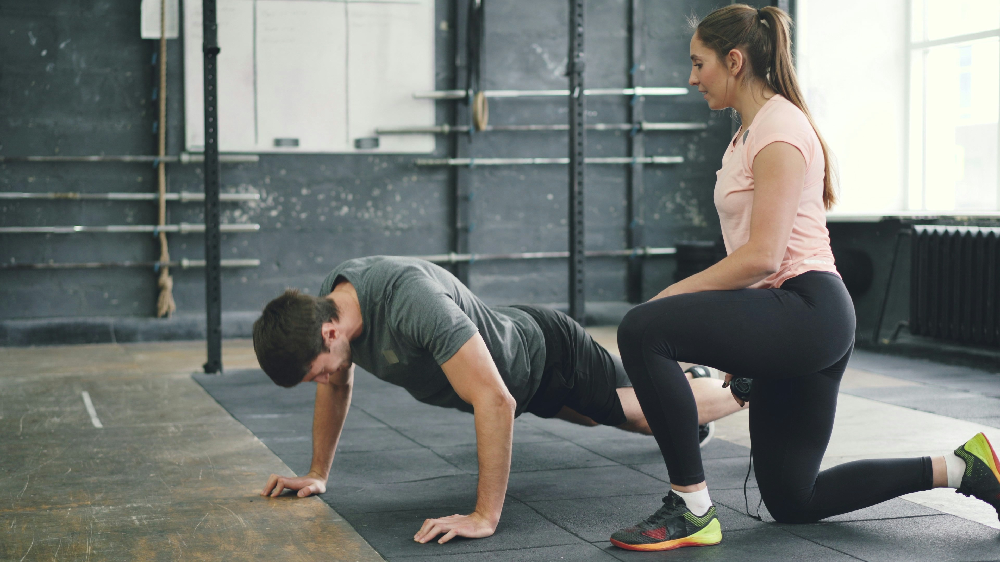
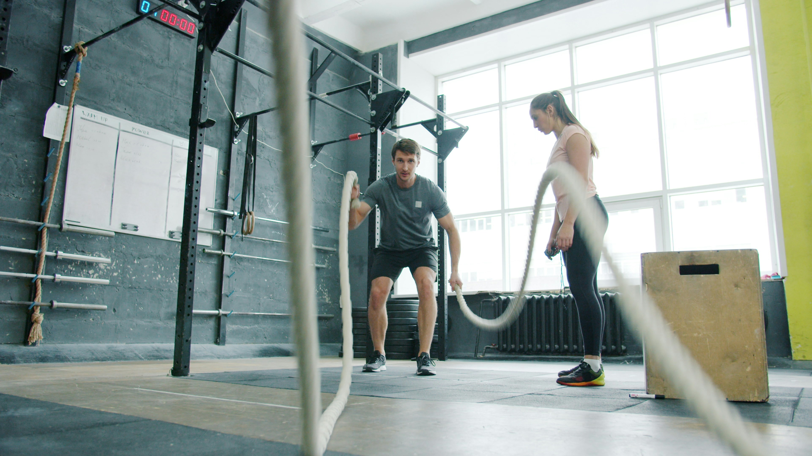

Entede tu cuerpo

Cuerpo presente:
una manera deistinta de ver el movimeinto.
Cuerpo Presente surge de comprender un problema concreto: muchas personas comienzan a moverse, pero no logran sostenerlo en el tiempo. Mi trabajo se centra en acompañar procesos que generen impacto real y continuidad, tanto en personas como en profesionales del movimiento. No se trata solo de qué ejercicios se hacen, sino de cómo se vive la experiencia corporal en cada práctica.

"CREO EN EL MOEVIMEINTO COMO UNA PUERTA DE ENTRADA AL AUTOCONOCIMIENTO Y A LA DOCENCIA, COMO UNA FORMA DE ACOMPAÑAR PRCOESOS QUE DEJAN HUELLAS"
nuestra formación
“Mi formación no es lineal ni cerrada. Es un proceso en movimiento.”
DOCENCIA
Soy Profesora de Educación Física (ISEF Nº1 Romero Brest), institución en la que hoy también me desempeño como docente, y Licenciada en Actividad Física y Deporte (UFLO). Me especialicé en Educación Emocional, Neurociencias y Aprendizaje, y actualmente continúo formándome en Educación Somática.
INTEGRACIÓN
Hay algo que define mi manera de formarme: la búsqueda constante de integración. No entiendo el aprendizaje como acumulación de información, sino como la capacidad de conectar, cuestionar y llevar a la práctica lo que estudio. Esa forma de aprender es la que hoy le da sustento a Cuerpo Presente: una mirada que integra pedagogía, cuerpo, emoción y ciencia, no desde la teoría aislada, sino desde la experiencia aplicada.